Sustainability
Reclaimed wood for shelving and furniture, a living wall behind the counter, and a planted roof that ties the building back to the garden. Materials were chosen to last and to cost little.
Volunteer Social Service · Jan to Jul 2022
Architectural and interior design for the outreach store of Jardín Etnobotánico Francisco Peláez R. in Puebla, México. A 225 sq ft room shaped around reclaimed wood, living plants and natural light.
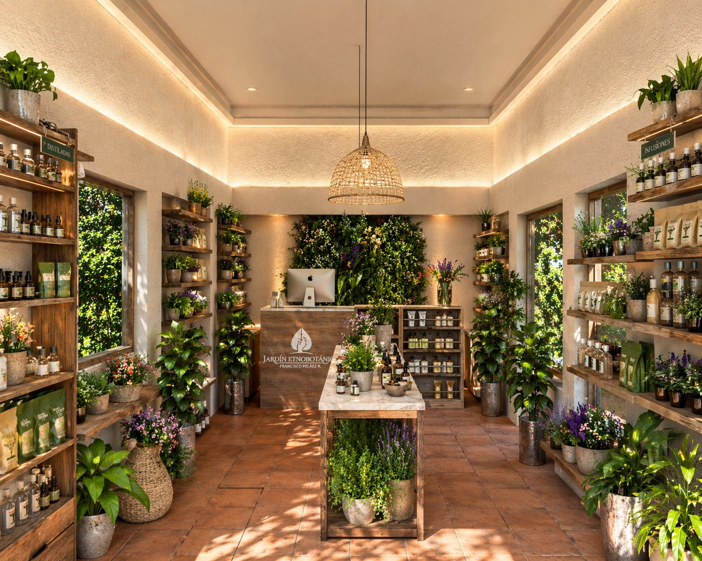
Client
Jardín Etnobotánico Francisco Peláez R.
Role
Architectural Designer, volunteer
Area
225 sq ft
Location
Puebla, México
Status
Completed
01
The Context
The Etnobotanical Garden cultivates plants from all over the world and shares Puebla's botanical and cultural heritage through environmental education. Its outreach store is where that mission meets the public: plants, seeds, natural products and bird food, sold in a space that should feel like an extension of the garden itself.
The brief asked for three things: make products easy to see, give staff a productive place to work, and do it all within the client's most critical constraint, a low budget.
02
Design Principles
Three ideas guided every decision, from the floor plan to the joinery of the counter.
Reclaimed wood for shelving and furniture, a living wall behind the counter, and a planted roof that ties the building back to the garden. Materials were chosen to last and to cost little.
A warm palette of terracotta floor, lime-white walls and natural timber. Soft cove lighting and a woven pendant let the plants and products carry the color.
Modular, repeatable pieces and a single clear axis from the door to the counter. Nothing competes with the product: every surface either displays or serves.
03
Before and After
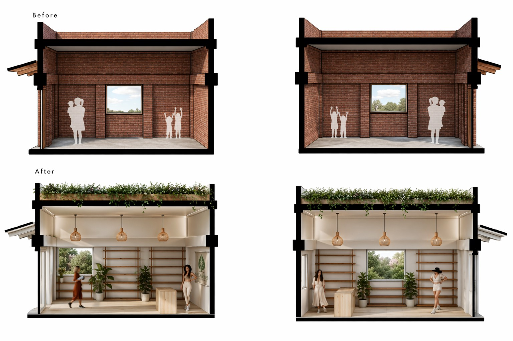
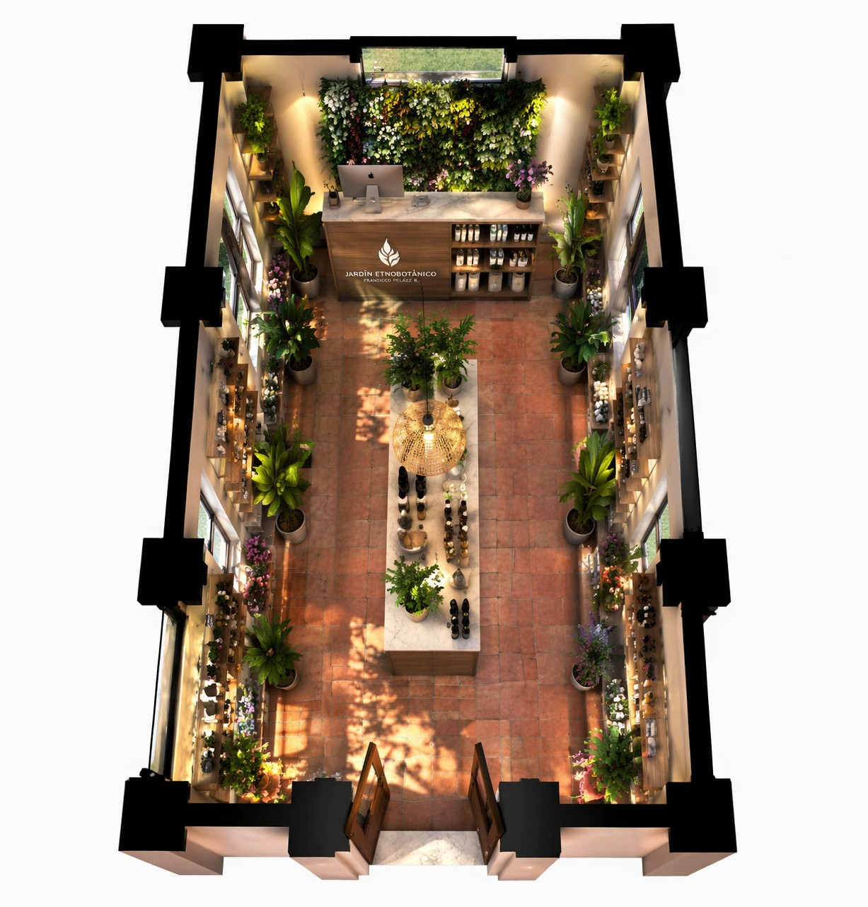
The Layout
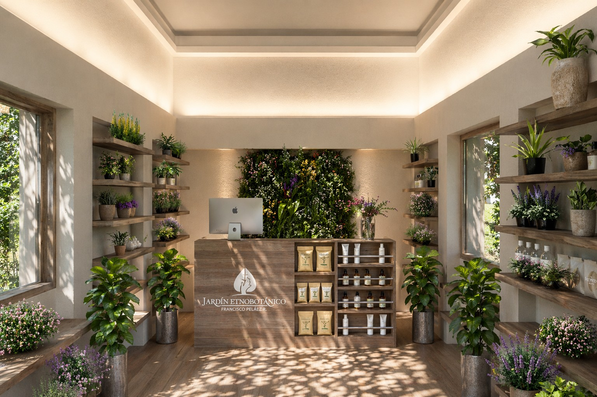
04
Concept Drawings
Diagrams that explain how the room is organized, how it is built up in layers and how it uses light. Drawn as concept diagrams: not to scale and not construction documents.
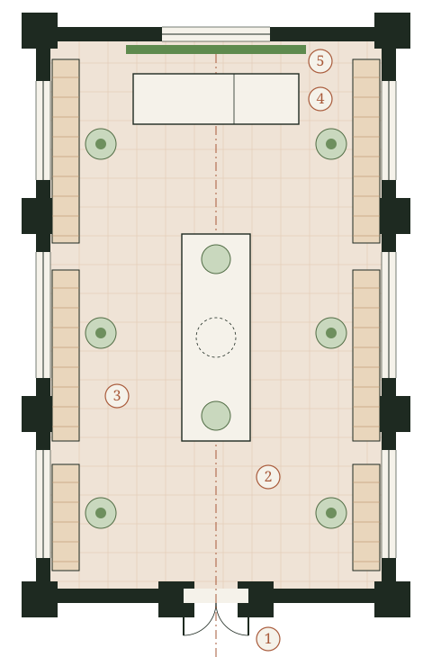
Floor plan
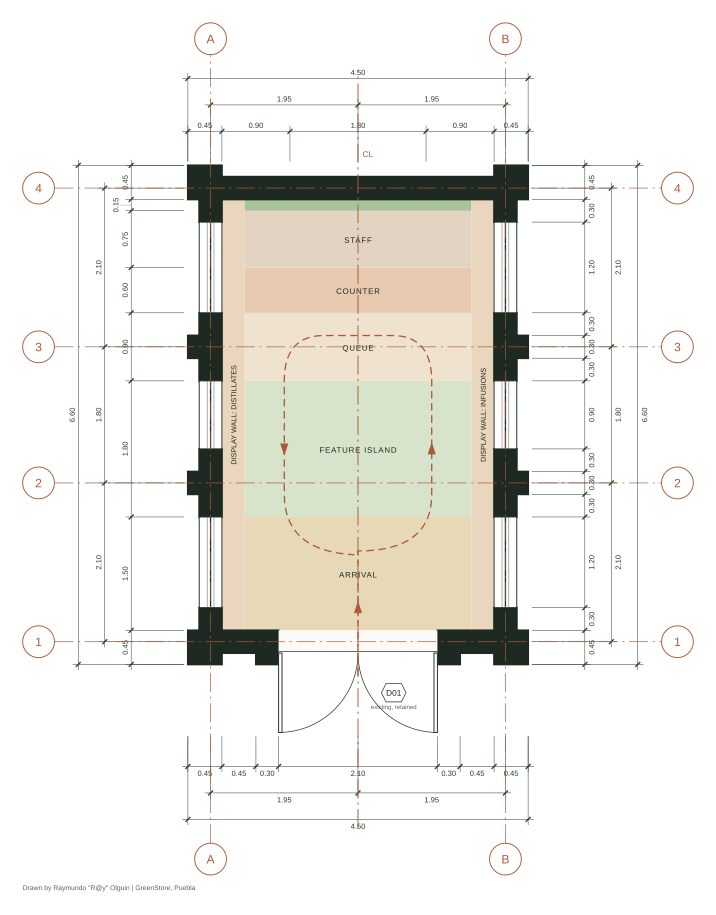
Zoning and circulation
Visitors arrive on axis, loop around the feature island past both display walls, and finish at the service counter.
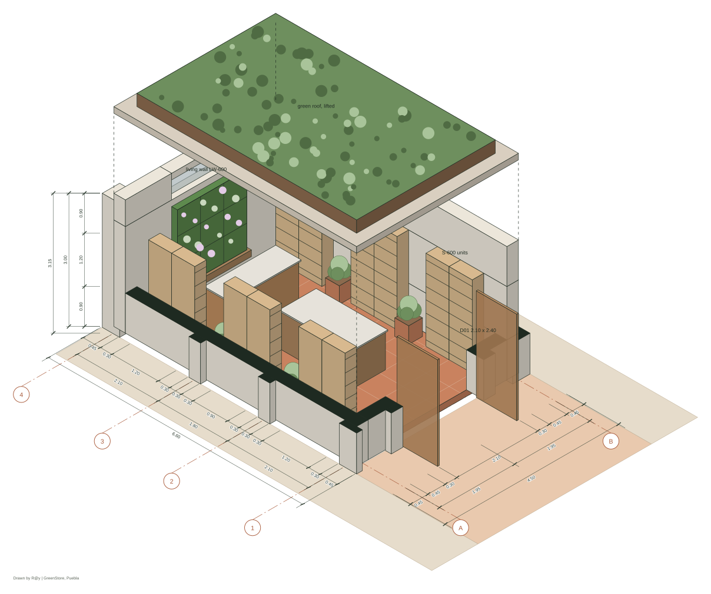
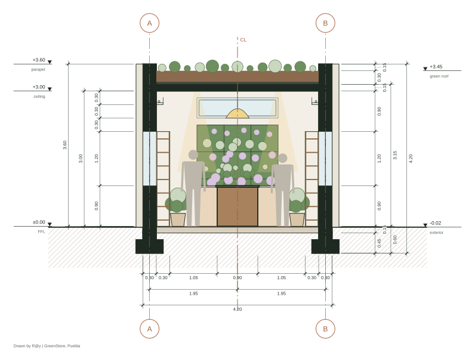
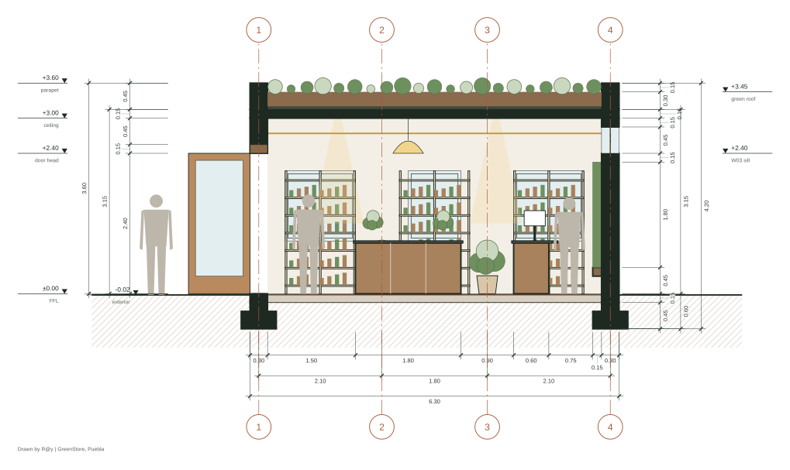
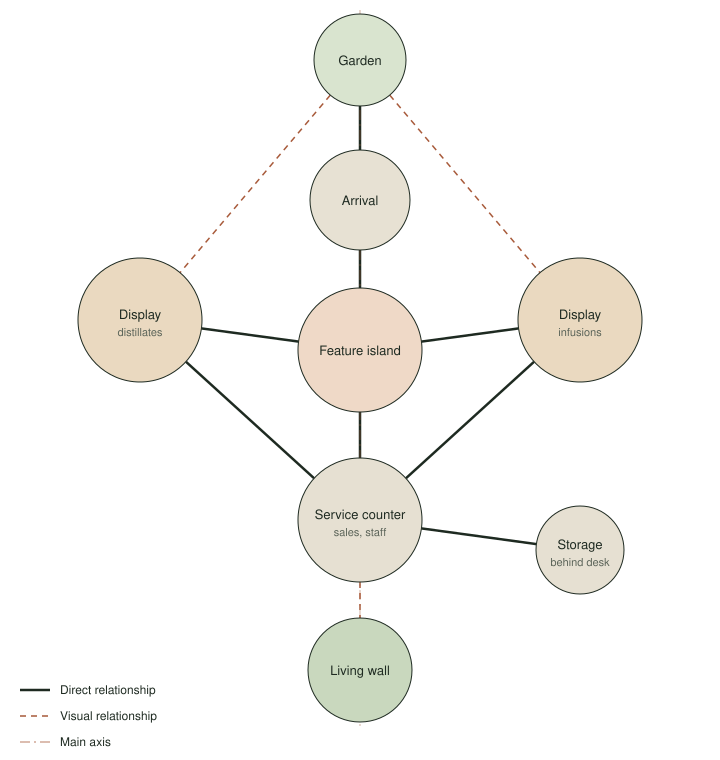
Functional Diagram
Every space connects back to the feature island, so a visitor never reaches a dead end. The two display walls, one for distillates and one for infusions, both lead to the counter, where sales and staff work meet.
Visual links keep the garden present: it is seen through the windows from both displays, and the living wall is always in view from the counter.
Building Systems
Concept layouts for lighting, power, irrigation and drainage, showing intent rather than engineered routing.
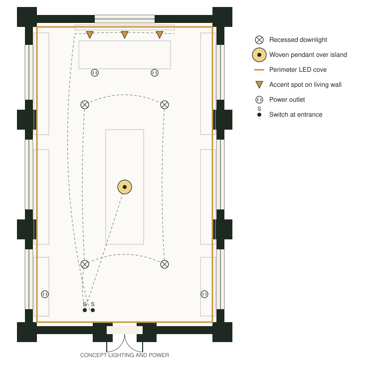
Lighting and power
Layered light: an LED cove washes the ceiling, downlights light the aisles, the pendant marks the island and accent spots bring out the living wall.
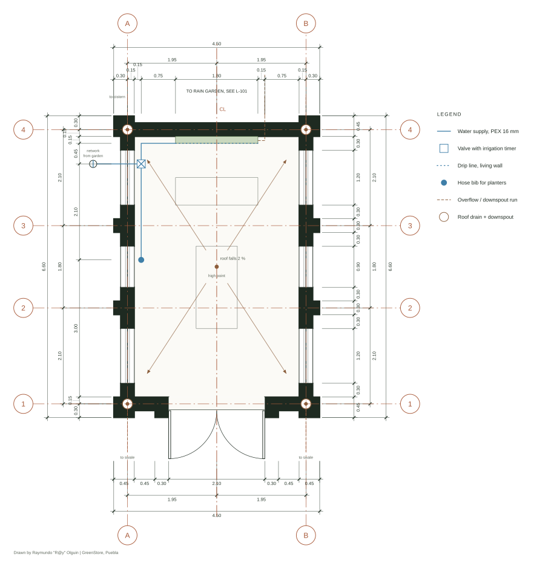
Irrigation and drainage
A timed drip line keeps the living wall watered with a tray to catch runoff, and the green roof slopes to corner drains.
Material Palette
Terracotta tile
Floor
Reclaimed wood
Shelving and furniture
Textured plaster
Walls and ceiling
Living green
Living wall and roof
Woven fiber
Pendant and baskets
Pale stone
Island top
05
Furniture Design
The front face displays jars, bottles and seed packets on open shelves and rails. The back holds a computer station, cubbies and storage boxes for stock. Built from simple timber panels, it can be assembled, repaired or extended without specialist labor.
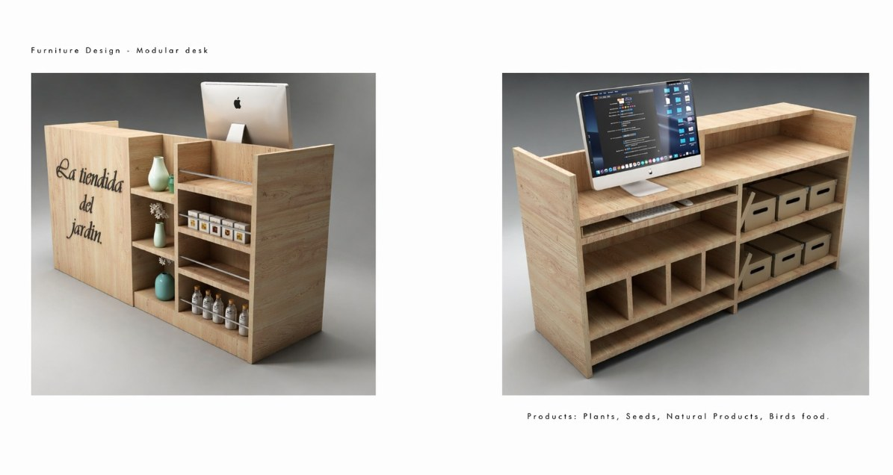
06
My Role
Seven months of voluntary service, January to July 2022, working with a multidisciplinary team.
Developed architectural plans, 3D models and renderings in Revit, translating design concepts into construction documentation.
Designed the interior layout and custom furniture to support product displays and the visitor experience.
Collaborated on project planning, cost estimates and budget analysis, aligning the design with the garden's needs and resources.
My purpose was to give back to the community by applying my architectural and design skills to a space that shares Puebla's botanical and cultural heritage.
Raymundo "R@y" Olguin